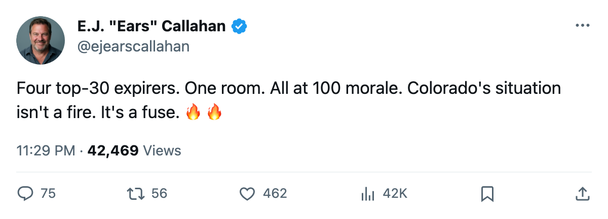
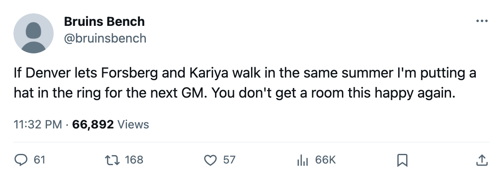

Contract-Year Watch: 4 Names in Denver. All at 100. None Will Leave Without a Sound.
Forsberg, Kariya, Hejduk and Selanne hold the Board's top 30 in one locker room, one payroll, and zero unhappy faces.
Colorado holds 4 of the top 30 contract-year players, all at 100 morale, all expiring. Extension or fire sale by March.

The piece
 Colorado Avalanche entered October holding four of the 30 best contract-year players on the Bureau's Board.
Colorado Avalanche entered October holding four of the 30 best contract-year players on the Bureau's Board.  Peter Forsberg95 at 95 overall,
Peter Forsberg95 at 95 overall,  Paul Kariya89 at 89,
Paul Kariya89 at 89,  Milan Hejduk88 at 88,
Milan Hejduk88 at 88,  Teemu Selanne86 at 86. All four carry morale at 100. None is asking for a trade. The payroll that holds them is $68.11M.
Teemu Selanne86 at 86. All four carry morale at 100. None is asking for a trade. The payroll that holds them is $68.11M.
A club morale of 97.4 puts Colorado Avalanche among the happiest rooms in the league. These four sit at the ceiling. A contented locker room is a front office's easiest problem. Except that all four contracts expire at the end of this season, the ages are 32, 30, 29 and 35, and the salary lines read $9.90M, $10.11M, $2.50M and $6.94M.
| Player | Age | Salary | Overall | GP | Points | Morale |
|---|---|---|---|---|---|---|
| Peter Forsberg | 32 | $9.90M | 95 | 1 | 1 | 100 |
| Paul Kariya | 30 | $10.11M | 89 | 1 | 1 | 100 |
| Milan Hejduk | 29 | $2.50M | 88 | 1 | 1 | 100 |
| Teemu Selanne | 35 | $6.94M | 86 | 1 | 2 | 100 |
Colorado cleared $27.91M in profit on $36.35M of revenue last season, enough to fund extensions. The payroll returned a first-round playoff exit last spring and 0 points in the column that measures what a dollar buys in the postseason.
The free-agent pool holds 0 names. When these four become available, they will not land in a thin market. They will be the market. The Board has all four at 86 or better, which means every club in the league will look at the same contract years and run the same math: 95, 89, 88, 86, all with one year left, all walkable.
A man who would know, asked about the mood in Denver, said it was "the best I've seen here in years." He would not say whether any of the four has received an extension offer. League sources say the talks on big money haven't started because the morale hasn't cracked.
That is the trap. A happy room doesn't push. Selanne at 35 and $6.94M won't force a trade with 100 morale. Forsberg at $9.90M won't make an ultimatum when the room feels like this. They just play the year and then the clock runs out.
The trade deadline is 157 days out. Colorado Avalanche can extend, trade, or watch four of the Board's top 30 walk in the same offseason. The 100s make trade the least likely answer and leave the front office with a single path: four extensions on four men past 29, or four empty chairs in June.
Nobody in Denver is calling this a problem yet. It becomes one all at once.

